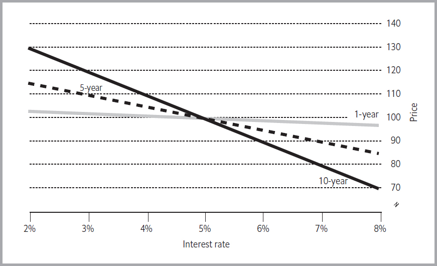
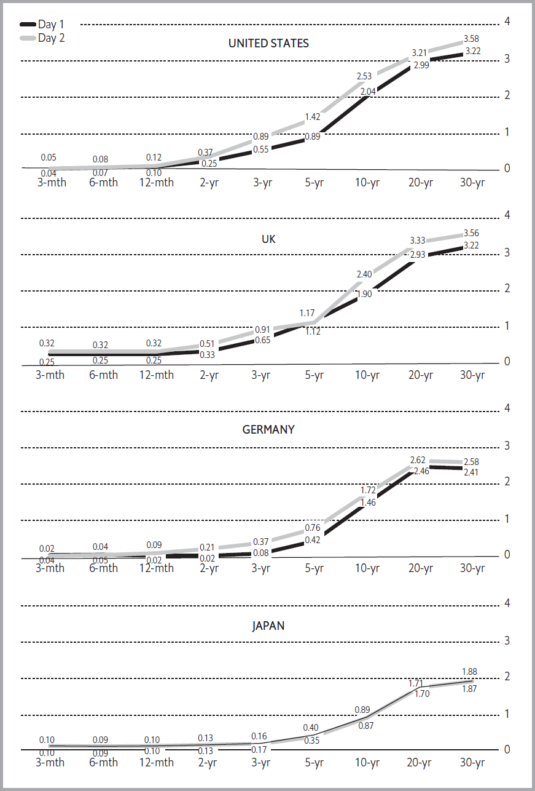
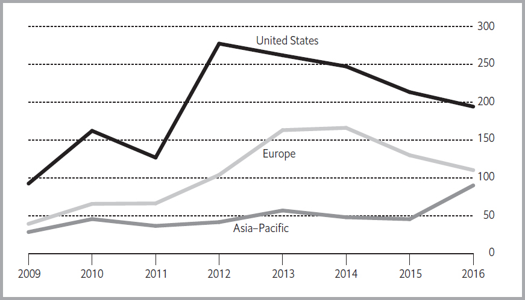

货币市场
回到目录
“债券”一词的意思是合同、协议或担保。这些术语都适用于被称为债券的证券。购买债券的投资者实际上是在向发行人提供贷款，而债券则代表了发行人根据特定条款支付利息和偿还本金的契约性承诺。短期债券通常被称为票据。
债券是中世纪以来早期银行家为资助战争而提供贷款的自然延伸。随着政府对资金的需求不断增长，银行家发现很难筹集足够的资金满足客户的借款需求。债券为政府提供了一种可以从众多个人借款的方式，而不仅仅依赖于少数银行家。此外，债券还使贷方能够通过将债券转售给他人来降低风险，尤其是在他们认为借款人可能无法还款的情况下。已知最早的债券由威尼斯银行于1157年发行，用于资助与君士坦丁堡的战争。
今天，债券是所有金融工具中使用最广泛的。2017年，全球债券市场规模约为95万亿美元，其中约72万亿美元在国内市场交易，另有23万亿美元在发行人所在国以外的市场交易。
在美国这一全球最大的单一市场中，2017年平均每天交易的债券价值接近8000亿美元，而截至2017年底，未偿还债券的总价值超过40万亿美元。下表显示了国内债务市场规模最大的国家。
2009年至2012年间，由于多种原因，许多国家的债券发行量迅速增长。糟糕的经济状况促使许多政府通过发行政府债券来为大额预算赤字提供资金，以刺激经济。极低的长期利率使许多公司即使在没有资金需求的情况下也愿意发行债券。一些主要国家（尤其是中国、巴西和墨西哥）经济健康状况的改善，使这些国家的公司能够以比过去更低的成本以国内或外币借款，从而推动了一波新兴市场债券热潮，直到2013年才结束。中国在2000年代初国内债券发行规模很小，但如今已拥有世界第三大国内债券市场。
国内债务证券未偿余额（万亿美元）
| 国家 | 2004年12月 | 2008年12月 | 2012年12月 | 2016年12月 |
|---|---|---|---|---|
| 美国 | 24.7 | 24.6 | 33.0 | 35.5 |
| 日本 | 15.7 | 11.1 | 14.4 | 13.7 |
| 中国 | 0.8 | 2.2 | 3.8 | 9.2 |
| 法国 | 3.3 | 2.9 | 3.6 | 3.7 |
| 英国 | 1.7 | 1.2 | 1.6 | 3.0 |
| 意大利 | 3.9 | 3.3 | 3.0 | 2.3 |
| 德国 | 3.4 | 2.6 | 2.6 | 2.3 |
| 巴西 | 0.7 | 0.9 | 2.1 | 2.0 |
| 加拿大 | 1.3 | 1.0 | 1.7 | 1.6 |
| 韩国 | 0.8 | 0.9 | 1.3 | 1.6 |
| 西班牙 | 1.3 | 1.7 | 1.6 | 13 |
债券通常被归类为固定收益证券。它们常被视为保守型投资者的无趣、低风险工具，以及在动荡市场中用于保全资本的防御性手段。在1970年代之前，这些刻板印象基本属实，但自那以后，债券市场发生了巨大的变化。一些债券并不保证固定收益，许多债券具有很高的风险。所有债券的共同点是，它们是一种债务证券，持有人有权在债券存续期间获得利息支付，并在到期时收回本金，但不拥有发行人的所有权或管理控制权。
为什么发行债券？
债券从来都不是发行人唯一的融资来源。所有选择发行债券的企业和政府实体通常已经通过银行借款，许多还从客户、供应商或专业金融公司获得了融资。发行债券的主要原因是为了多元化资金来源。单一银行能向单个借款人提供的贷款额度是有限的，而通过吸引规模更大、更加多样化的债券市场投资者，发行人可以在不耗尽传统贷款额度的情况下筹集更多资金。
此外，债券还帮助发行人实施特定的财务管理策略，包括以下几方面：
- 降低融资成本: 杠杆，即利用借款，使盈利性企业能够扩大经营，获得比仅依靠股东投资资金更多的利润。企业通常更倾向于债券而非其他形式的杠杆（如银行贷款），因为债券成本更低，并且可以分期偿还较长时间。债券发行是否增加发行人的杠杆水平，取决于债券是增加总借款额，还是仅替代其他形式的借款。
- 匹配收入与支出: 许多资本投资项目（如收费桥梁或铜冶炼厂）需要数年才能完成，但随后预计会在很长时间内产生收入。债券提供了一种将这些项目借款的还款与预期收入挂钩的方式。
- 促进代际公平: 政府通常会开展一些项目，例如修建道路或购买公园用地，这些项目能够带来长期收益。债券为未来受益的纳税人分担成本提供了一种方式，而不将全部负担加诸于当前的纳税人。
- 控制风险: 偿还债券的义务可以与某个特定项目或某个政府机构挂钩。这可以使母公司或政府在未能按要求偿还债券时免于承担责任。
- 避免短期财务约束: 政府和企业可能会利用债券市场来避免采取可能由于资金短缺而不得不采取的痛苦措施，例如增税、裁员或降薪。
发行方
债券由四种基本类型的实体发行。
国家政府
由国家政府的完全信用和信誉支持的债券被称为主权债券。这些债券通常被认为是最安全的债券类型。国家政府有强烈的动机按时还款，以保持其在信贷市场中的准入地位。此外，它还拥有非凡的权力，通常包括印钞能力以及掌控外汇储备的能力，这些可以用来支付债务。
最著名的主权债券是那些由大型富裕国家政府发行的债券。例如，美国国债（称为Treasuries）是世界上持有最广泛的证券，2017年约有14万亿美元由私人持有。其他受欢迎的主权债券包括日本政府债券（称为JGBs）、德国政府发行的联邦债券（称为Bunds）、英国政府发行的金边债券（称为Gilts），以及法国政府的国库债券（称为OATs）。所谓新兴经济体国家（如巴西、阿根廷和俄罗斯）的政府也发行了大量债券。
另一类主权债券是由某些实体（例如省份或企业）发行、但由国家政府同意承担责任的债券。投资者对这类债券的热情取决于多个因素，其中包括政府是否做出了具有法律约束力的还款承诺，还是仅仅是道义上的义务。在许多国家，国家政府可能承担责任的债务总量很高。例如，在美国，联邦支持的机构在2017年共有1.9万亿美元的未偿债券，尽管这一数字低于2008年峰值的3.2万亿美元。虽然其中大部分并不构成美国政府的法律责任，但如果发行机构违约，美国政府会面临极大的支付压力。例如在2008年，为避免违约，美国政府对两家联邦支持的住房贷款机构——房利美（Fannie Mae）和房地美（Freddie Mac）进行了救助。
地方政府
由次国家级政府（如城市、省份或州）发行的债券被称为半主权债券。由于城市没有印钞权或掌控外汇的能力，半主权债券通常比主权债券风险更高。
最著名的半主权债券是由美国州和地方政府发行的市政债券。由于其利息免征美国联邦所得税以及发行地州的所得税，这些债券受到部分投资者的青睐。2017年，这类债券的未偿总额约为3.8万亿美元。加拿大省级债券、意大利地方政府债券以及日本地区和市政债券也在广泛交易。然而，许多国家有意限制次主权实体进入债券市场，以控制其债务水平，同时确保银行能够持续获得贷款业务。例如，西班牙政府未能限制地方政府的借贷行为，导致其在2012年不得不救助四个高负债地区，以保护债券持有人。巴西在2013年结束了对州政府发行债券长达15年的禁令。在美国，底特律市（曾是该国最大的城市之一）于2013年中通过破产程序重组了债务，导致其债券持有人损失了大量投资。
半主权债券有许多分类，这取决于其还款保障方式。例如： - 一般责任债券：如果发行人违约，债券持有人对发行人税收收入享有优先索偿权。 - 收入债券：用于资助特定项目，债券持有人只能对项目产生的收入提出索偿。例如，用于建造市政停车场的收入债券，若停车场未能产生足够收入，持有人无法依赖市政府付款。 - 专项债券：还款来源于特定收入，例如用于偿还会议中心债券的酒店住宿税，但通常不以发行人的一般基金作为担保。
包括主权债券和半主权债券在内的公共部门债务约占全球国内债务总量的50%。2017年，公共部门未偿债务总额接近60万亿美元，几乎全部在国内债券市场发行，而非国际市场。
企业债券
企业债券是由企业发行的债券，无论企业由私人投资者拥有还是由政府所有。大型企业可能同时发行多种债务工具。 - 在发行担保债务时，企业必须为债券持有人提供特定资产作为抵押。例如，一家电力公司发行担保债券融资建设发电厂，若公司违约，债券持有人有权接管并出售该发电厂，但无权对其他发电厂或其收入提出索偿。 - 高级债务持有人在公司违约时对收入和资产享有优先索偿权，但不包括已抵押给担保债务持有人的部分。 - 次级债务持有人只有在所有其他债券持有人偿付完成后才能提出索偿。大型企业可能有多个次级债务类别。 - 夹层债务是比发行人其他债券保障性更低但比股票更高的一种债券发行形式。
证券化工具
资产支持证券（ABS）是一种以特定资产（如抵押贷款或未来销售收入）产生的收入作为支付来源的债券。部分资产支持证券由政府机构发起，部分由私营机构发起。这类证券通常由投资银行组装，往往不代表特定发行人的债务责任。
债券各类别之间的界限往往模糊。例如，政府机构经常发行债券以支持私营公司，尽管若发行人未能支付，投资者可能无法对政府提出法律索偿。国家政府可能对国有企业甚至私营企业的债券发行提供道义支持，但不一定提供完全的信用担保。跨国公司可能安排其子公司在其他国家发行债券，从而在违约时免除母公司的责任，但其支付能力将取决于外国政府的政策。
债券期货
许多国家的交易所都可以交易利率期货合约。这些合约允许投资者在合约到期日时，根据利率是否高于或低于指定水平获得支付。大型投资者将此类合约作为其债券投资策略的重要组成部分。（期货和利率期权合约将在第8章讨论，远期合约的内容——同样可以用于管理利率变化的风险——将在第9章讨论。）
最大的国家市场
公司债券和部分资产支持证券是私人部门债务市场的主要组成部分。从20世纪后期到2012年，这一市场整体快速增长，但自那以后全球市场规模几乎没有变化。这主要是因为许多国家面临金融压力、美国和西欧的金融危机导致部分债券类型使用减少，以及许多国家银行贷款的可得性增加。下表中列出了部分国家长期债券发行的相关信息。
长期债券发行额（十亿美元）
| 国家 | 2004 | 2008 | 2012 | 2016 |
|---|---|---|---|---|
| 美国 | 5,824 | 4,828 | 7,133 | 6,998 |
| 日本 | 383 | 817 | 1,721 | 2,138 |
| 德国 | 543 | 513 | 754 | 631 |
| 加拿大 | 142 | 274 | 421 | 559 |
| 法国 | 276 | 463 | 597 | 546 |
| 英国 | 407 | 854 | 548 | 457 |
| 意大利 | 247 | 335 | 323 | 434 |
| 澳大利亚 | 116 | 161 | 291 | 243 |
| 荷兰 | 109 | 200 | 222 | 172 |
| 全球总计 | 9,240 | 10,863 | 16,432 | 21,390 |
全球私人部门债务证券中有相当大比例是在美国发行的。这在很大程度上是因为许多其他国家刻意限制债券市场的发展。例如： - 在日本，债券发行安排委员会（一个受政府鼓励的银行家组织）在1987年前控制发行成本和时间，同时银行家卡特尔将费用维持在高位。 - 在德国，1984年前的法规禁止公司发行期限少于五年的债券，并要求财政部对每次发行进行审批。 - 在法国，1992年前禁止发行期限少于七年的公司债券，要求财政部批准每次发行的详细计划，还需要银行家和公共官员组成的委员会批准发行时间，以避免私人部门债券发行干扰政府的借贷计划。
这些限制鼓励了银行融资的使用，而不是债券市场的发展。
欧洲公司债券市场在1999年引入单一货币（欧元）后快速增长，因为这为投资者提供了一个大规模的投资池，投资者可以购买以欧元计价的债券而无需承担汇率变化的风险。然而，大多数较大的欧洲经济体的债券发行量在2012年达到峰值。英国的债券发行量则在2007年达到顶峰。
在亚太地区，近年来债券发行显著增加，特别是在此前国内债券市场较小的国家（如中国和韩国），其市场经历了显著的增长。这部分是由于全球低利率的影响，但同时也反映了企业部门的快速增长以及监管变化。这些变化吸引了新的发行人进入市场，并增强了投资者持有长期债务的信心。
债券发行
债券发行需遵循各国的法规规定，这些规定详细列出发行债券的必要步骤。每次发行都需要准备一份详尽的法律文件，通常被称为发售文件、招股说明书或官方声明，其中详细列出发行人的财务状况、债务发行目的、债务偿还所需的利息和本金支付时间表，以及若未按要求偿还债务时提供给债券持有人的担保。投资者会仔细审查这些文件，因为发行的具体细节对按时偿还的可能性有重大影响。在某些情况下，监管机构需要审核发售文件，以确定信息披露是否充分，并可能要求在提供额外信息之前暂停债券发行。在美国，发行人可以通过储架注册（shelf registration）提前获得大规模债券发行的批准，然后根据市场情况分批出售债券，而大多数其他国家尚未采用这种创新方式。
承销商和经销商
发行人通过承销商和经销商将债券出售给公众。债券发行可以由一家投资银行单独承销，也可以由一个被称为承销团的多家银行组团承销。许多承销团包括来自不同国家的投资银行，以便更好地在国际市场上销售债券。发行人通常会选择一到两家公司作为主承销商，负责组建承销团并为每个成员分配债券份额。
过去，多家公司在承销业务中竞争，但银行业的并购使得少数几家大型投资银行主导了全球债券承销市场。
承销商可能会向发行人收取一笔费用，用于安排债券发行并向潜在投资者推销。或者，他们可能以折扣价从发行人处购买债券，并以较高价格转售给公众，从价差中获利。如果投资银行以全额包销（firm commitment）方式承销债券，它们将保证发行人获得固定价格，并承担若债券未以该价格售出可能带来的损失风险。反之，如果以尽力承销（best efforts）方式承销，则发行人获得市场上投资者愿意支付的任何价格，承销商不承担价格风险。承销商可能会以折扣价将债券出售给经销商，而后者不承担承销风险，但负责向小型投资者销售。
国家政府通常通过一级交易商分销债券，而不依赖承销商。一级交易商有义务，也常常享有专属权利，参与政府的债券销售，然后将债券转售给投资者。
互换交易
发行人售出特定债券并不一定意味着其支付的利息与预期相同。发行人越来越多地利用利率互换来实现所需的融资安排。例如，发行人可能以固定利率发行一笔五年期1亿美元债券，然后立即与投资银行达成互换协议，由投资银行支付固定利息，而发行人向银行支付浮动利率。这类交易能否节省成本或降低风险，取决于互换利差（swap spread），即某一期限的固定利率与当前浮动利率之间的差额。
确定利率
债券发行的利率可以通过多种方法确定，其中最常见的是承销商根据发行当天的市场利率设定利率。然而，这需要一定的判断，可能导致两种结果：如果利率定得过高，发行人支付的成本过高；如果利率定得过低，承销商可能会持有未售出的债券。为防止承销团成员相互竞争，大多数承销团禁止成员在一定时间内以低于商定价格销售债券。
另一种确定利率的方法是拍卖。债券市场中有几种拍卖技术：
- 竞争性拍卖允许投资者或经销商以特定利率报价购买债券（或以平价购买债券时提供可接受的利率）。报价可能在多轮竞价中逐渐升高（或利率逐渐降低）。
- 债券可全部按拍卖中满足发行总量的最高报价出售，也可以采用多价格拍卖，每个成功竞标者按其最终报价支付债券价格。
- 在密封投标拍卖中，投标以书面形式提交。一种流行的密封投标方式是荷兰式拍卖，发行人设定利率，竞标者提交购买债券的数量和价格范围；债券最终按满足全部发行量的最高价格出售。
直接销售
新技术使一些发行人可以通过互联网直接向投资者出售债券，而无需承销商或经销商的中介。这种方式可能降低某些发行人的成本，同时减少承销债券的投资银行和经纪商的利润。
第一次在线发行发生在1999年11月，由宾夕法尼亚州匹兹堡市发行了5500万美元债券。最初，在线发行仅面向机构投资者，但随着市场发展，直接向个人投资者销售变得越来越普遍。根据不同安排，投资者可能通过互联网了解发行情况、阅读财务材料并提交“意向声明”（即初步报价），在某些情况下，投资者甚至可以在指定拍卖期内在线出价。
尽管投资银行通常参与在线债券发行，但因为在线发行需要的工作较少（如识别潜在买家和评估市场接受度），它们收取的费用通常低于传统承销。在线发行更常见于国家或地方政府债券，因为个人投资者更熟悉这些发行人，而不是企业或金融机构。
许多国家政府至少部分通过电子拍卖系统发行债券。这种方式允许投资者绕过传统控制政府债券发行的交易商，从而节省成本。例如，在2012年12月的一次拍卖中，美国财政部发行的十年期债券有三分之二是由投资者直接购买，而非通过交易商购买。
不再需要票息
过去，债券购买者会收到作为所有权证明的债券证书。证书上通常附有与债券应付利息相关的票息，每次支付时，投资者需撕下相应的票息并将其带到银行或证券经纪商处领取支付。
纸质债券如今已不常见。它们仍然用于一些记名债券（以持有人的名义发行）和无记名债券（未登记在特定名下，可由实际持有人转售）。然而，大多数债务证券现在以簿记债券形式发行，仅作为电子记录存在于受托人的电脑系统中。受托人通常是一家银行，负责代发行人支付利息，并最终兑付债券。税务机关越来越多地要求债券以特定债券持有人的名义发行，因为无记名债券的利息支付难以征税。
市场性质的变化
直到20世纪70年代，债券市场主要是一个一级市场。这意味着投资者会在债券发行时购买，并持有至本金偿还为止。由于现金流高度可预测，债券成为如寿险公司和养老基金等投资者的理想资产，这些机构的义务可以提前很久预测。基本的投资策略是匹配资产和负债。投资者会估算未来某一年（通常是10年或20年后）的财务需求，然后寻找在该时间点到期且质量可接受的债券。成功的债券投资者往往是那些能够以略高于同类债券收益率的价格购入债券的人。
自20世纪70年代末以来，投资债券的原因发生了变化。许多投资者现在会主动交易债券，以利用价格差异，而非长期持有。这种变化源于两个发展：
- 计算机技术使交易者能够快速发现价格差异。
- 以前，投资者会将所有债券按照原始购买价格估值，直到债券被出售为止，而新的会计规则要求在特定条件下，债券需按照当前市场价值估值，即“市值计价”。这意味着，即使债券未出售，持有者也必须在每个报告期内记录损失或收益，这可能使持有债券不再具有优势。
二级交易
一些公司债券在证券交易所交易，投资者之间可以相互买卖。然而，绝大多数债券交易发生在场外市场，即投资者与债券交易商之间进行。投资者可以通过电话或互联网向特定交易商下单，而大型机构投资者（如养老基金和共同基金）通常使用更复杂的电子系统，与多个交易商接洽。
无论使用何种系统，想要买卖债券的机构投资者通常会联系多个交易商表达需求。持有该债券或愿意持有的交易商会提供买入价（出价）或卖出价（要价）。政府债券的交易商众多，买卖价差通常极小。受欢迎的公司债券可能会被十几个或更多交易商活跃交易，但其买卖价差通常比政府债券更大。对于公司或次级主权机构发行的小规模债券，由于只有一两个交易商有兴趣买卖这些债券，其交易可能较为困难。在某些情况下，如果没有任何持有该债券的投资者愿意出售，可能无法购得特定债券。
近年来，银行监管的变化使债券交易复杂化，特别是对于公司债券而言。过去，银行通常持有大量债券库存，以便从客户处购入并再售予其他客户。但新规使得持有此类库存的成本增加，甚至在某些情况下禁止银行持有库存。这导致部分债券的买卖价差变大，也使得投资者更难找到愿意买卖特定债券的交易对手。
电子交易
大量资金和精力投入到电子交易系统的建设中。截至2002年，已有81个屏幕化债券交易系统投入运营，其中一些属于单一交易商，另一些则聚集了多个交易商。然而，市场无法支持如此多的竞争者，许多新兴的电子债券交易所失败了。其他电子系统试图使投资者能够直接交易，无需支付交易商的费用。电子交易在政府债券市场非常成功，因为政府债券种类较少，流动性（可用于投资的金额）很高。据估算，约四分之三的欧洲政府债券交易通过电子系统完成。这些系统还支持商业票据、新兴市场债券及其他固定收益产品的在线交易。
公司债券和市政债券的交易则难以实现自动化，原因有三：
-
机构投资者的策略要求几乎同时完成交易：例如，投资者可能希望卖出投资组合中的宝洁公司债券，同时买入当前价格更低的联合利华债券。但这一操作仅在两个部分都能完成时才有意义。如果投资者卖出了宝洁债券，却发现无法买到联合利华债券，这笔交易就不成立。这种交易通常需要与交易商讨论，因为交易商的债券库存可确保整个交易完成。
-
价格信息不透明：由于债券交易较少在交易所进行，无法保证所有交易都公开报告。在美国，法规要求交易商向中央结算所报告某些交易，但在一些国家，只有交易商和其客户知道某一债券的交易价格。在这种情况下，交易商发布的价格可能无法反映实际交易的价格。
-
债券种类繁多且流动性差：据估算，欧盟内交易的债务证券种类多达15万种。一家大公司可能同时发行几十种不同债券，每种债券的特性不同。在初始发行后，大部分债券交易稀少甚至从未交易。投资者在电子系统上发布买卖此类证券的请求，可能难以找到交易对象。在这种情况下，与交易商讨论可能更有用，交易商或许愿意交易这些债券，或者知道其他投资者准备买卖该特定债券。
电子交易可能会提高某些证券的价格透明度，从而降低投资者的成本。随着技术的成熟，电子交易系统在大量交易活跃的债券中占据重要地位。然而，对于数量庞大的小规模债券发行，电子系统仍然不够有效。这种债券种类的多样性将继续保证债券交易商的存在地位，尽管其角色可能有所减少。
结算
各国中央银行在缩短交易执行与资金支付之间的时间方面做出了巨大努力。一般而言，结算时间越短，银行或证券公司因与交易对手发生违约而受到损害的风险就越低。2008年9月，美国投资银行雷曼兄弟的倒闭导致大量债券交易无法结算，这重新引发了对缩短结算时间的关注。
在富裕国家，中央银行现要求政府证券交易的结算最迟不超过下一个工作日。在某些国家（如日本和美国），未能及时交付已同意出售的证券的一方可能会面临罚款。然而，即使如此，在同意交易后未能交付或接受证券的问题仍是债券市场中的一个顽固难题。
债券类型
市场上可供选择的债券种类日益增多。在某些情况下，发行方会根据特定机构投资者的需求设计债券。这类债券通常通过私人配售，不会在债券市场上交易。公开发行的债券一般属于以下一种或多种类型。
普通债券
也称为公司债券，是最基本的固定收益投资。持有人在指定日期（通常为发行后每六个月或每年）收到固定金额的利息支付。发行方必须在特定日期以债券面值（即票面价值）赎回债券。
可赎回债券
发行方可能保留在特定日期赎回债券的权利。赎回要求持有人以发行时指定的价格将债券出售给发行方，该价格通常高于当前市场价。赎回价格与当前市场价格之间的差额称为赎回溢价。由于投资者可能无法获得全部预期利息，可赎回债券的价值低于相同条件下的不可赎回债券。
非可退款债券
此类债券只能通过发行方从销售或税收中生成的资金进行赎回。这禁止发行方通过以较低利率发行新债券来赎回高利率债券。
可回售债券
持有人有权在指定日期以票面价值将债券回售给发行方。如果利率上升，这对投资者有利，因此可回售债券的价值高于相同条件下不可回售的债券。
永续债券
也称为不可赎回债券，是除非持有人同意将其出售回发行方，否则可无限期存在的债券。
零息债券
此类债券不支付定期利息，而是以低于票面价值的价格发行，并以票面价值赎回，差额作为利息收入。零息债券旨在消除再投资风险，即未来从债券获得的收入或本金需要以低于当前可用利率的利率进行再投资的风险。零息债券的持有人在债券到期前无需进行任何再投资，因此其投资回报更为确定。
STRIPS
STRIPS是“单独登记的证券利息和本金”的缩写，与零息债券类似。这类债券将与债券相关的支付分解为独立的证券，每笔支付对应一份独立的债券。例如，一只10年期的半年付息债券可被重组为最多21种不同的证券，其中20种对应债券期限内的每次利息支付，1种对应债券本金偿还权。这些证券本质上都是零息债券，以低于相关支付的价格出售，并以面值赎回。许多国家的债务管理办公室和中央银行会应证券交易商的要求将政府债券进行剥离。投资银行也可以从任何债券构造出类似证券，以满足特定投资者的需求。
可转换债券
在特定条件下，并严格按照债券持有人的选择，可转换债券可以兑换为其他证券，通常是发行方的普通股。可转换债券的招股说明书中会规定转换比率，即每张债券可以兑换的股票数量。可转换债券具有转换价值，即可兑换的普通股价格。买方通常需支付高于转换价值的溢价，以反映债券在转换前可继续支付利息的事实。可转换债券通常附有强制赎回保护，即禁止发行方在转换日期之前赎回债券。
可调整利率债券
这类债券有多种形式。浮动利率债券的利率通常根据短期利率频繁调整；可变利率债券的利率可能每年仅调整一次，通常与长期利率相关。阶梯票据的利率每年最多根据招股说明书中规定的公式调整一次。通胀指数债券旨在规避债券投资的主要风险，即通胀可能侵蚀利息支付和本金的价值。资本指数债券对本金和利息支付均进行通胀调整；利息指数债券仅对利息支付进行调整，而本金不受影响。指数零息债券在赎回时支付经通胀调整的本金。
结构化证券
附带期权的债券被称为结构化证券。可赎回、可回售和可转换债券是简单的结构化证券例子。另一个传统例子是认股权债券，它附带一份认股权证，赋予持有人在未来某些条件下购买另一种债券的权利。许多结构化证券更为复杂，其利率可能仅在特定范围内变化，按指数变化，甚至在某些情况下完全停止支付。这类工具的价格计算通常较为复杂，并很大程度上取决于附带期权的价值。
债券的特性
每一只债券，无论其发行人或类型如何，都具有一组基本特征。
到期日
到期日是债券发行人偿还所有本金并赎回债券的日期。到期年限即为期限。在实践中，期限和到期日常常可以互换使用。通常，1至5年到期的债券被归类为短期债券，5至12年到期的为中期债券，超过12年到期的为长期债券。很少有债券的到期时间超过30年，在许多国家，最长到期日为10年或20年。
票面利率
票面利率是债券在发行时的年利率，通常以发行价格的百分比表示。一旦债券发行，票面利率便不会改变。因此，一只面值为$1,000、每年支付$60利息的债券，其票面利率为6%。债券通常根据其到期日和票面利率来标识，例如“2024年到期的6.25%债券”。
当前收益率
当前收益率是债券在当前市场价格下的有效利率。计算公式为：
如果自债券发行以来价格下跌，当前收益率将高于票息；如果价格上涨，收益率将低于票息。假设一只债券的面值为100欧元，票息为6%。利率下降，该债券现在的交易价格为105欧元。当前收益率为：
到期收益率
这是债券持有者如果持有债券到期将获得的年收益率。与当前收益率不同，到期收益率包括债券到期时债券持有者将享有的任何资本利得或损失。这是比较不同债券回报率时最广泛使用的指标。
久期
久期是一个数字，表示投资者将在债券剩余寿命内多快收到总支付的50%，并调整支付时间的远近，远期支付的价值低于即期支付。这个复杂的概念可以通过看两个极端来理解。零息债券只在到期时支付，因此其久期恰好等于其期限。假设一只十年期年利率为100%的债券，允许持有者在前几年收取大量资金，因此其久期远短于其期限。大多数债券则介于两者之间。如果两只债券期限相同，收益率较高的债券久期较短，因为持有者更早收到更多的资金。
任何债券的久期每天都会发生变化。实际计算可能很复杂，有几种不同的计算方法。不同的投资者可能会对债券的久期有不同的看法：在计算中的一个关键数字，即应该用于为未来支付附加现值的折现率，完全是个人意见；另一个关键数字，即特定日期支付的金额，也并不总是确定的。
交易员和投资者非常关注久期，因为它是衡量债券风险性的最基本指标。久期越长，债券价格在到期前越可能波动。久期估算的差异是投资者对债券价格看法不同的一个重要原因：如果有一只十年期6%票息、每半年支付一次利息的债券，一个估算久期为7.6年的投资者愿意支付的价格会高于一个估算久期为7.7年的投资者。
风险评级
在公开市场发行债券之前，发行人通常会寻求一个或多个私人评级机构的评级。选定的评级机构会调查发行人偿债能力，包括财务状况、资金用途、政治和监管环境以及潜在的经济变化等方面。完成调查后，评级机构会给出一个评级，表示其对违约风险的估计，即发行人未能按要求偿还债务的可能性。评级通常由发行人支付，尽管在某些情况下，评级机构也可能主动发布评级。
三家知名的评级公司——穆迪投资者服务、标准普尔（均位于纽约）以及惠誉（位于纽约和伦敦）主导了评级行业。这些公司对某一债券的评级并不总是达成一致，因为它们采用不同的方法论。下面的表格解释了三家国际评级机构的违约评级。此外，还有许多评级机构仅在单一国家运营，或者专注于特定行业，如银行业或保险业。
所有评级机构都强调，它们评级的仅仅是违约的可能性，而非发行人可能面临财务困境或债券价格下跌的概率。尽管如此，评级在设定债券价格时仍然至关重要。评级较低的债券几乎总是比评级较高的债券提供更高的收益率。如果某机构下调了已经发行债券的评级，该债券的价格将下降。政府规定或内部程序限制了许多养老基金和保险公司投资“低于投资级”债券的金额，即那些违约可能性较高的债券。
| 评级含义 | 评级 | 穆迪 (Moody's) | 标普 (S&P) | 惠誉 (Fitch) |
|---|---|---|---|---|
| 最高质量，违约风险低 | AAA | Aaa | AAA | AAA |
| 高质量，违约风险低，但更容易受到经济变化的影响 | AA | Aa1, Aa2, Aa3 | AA+, AA, AA- | AA+, AA, AA- |
| 中高等级，违约风险低 | A | A1, A2, A3 | A+, A, A- | A+, A, A- |
| 中等级，违约风险适中 | BBB | Baa1, Baa2, Baa3 | BBB+, BBB, BBB- | BBB+, BBB, BBB- |
| 投机等级，违约风险较高 | BB | Ba1, Ba2, Ba3 | BB+, BB, BB- | BB+, BB, BB- |
| 高度投机，违约风险显著 | B | B1, B2, B3 | B+, B, B- | B+, B, B- |
| 重大风险，容易违约 | CCC | Caa1, Caa2, Caa3 | CCC+, CCC, CCC- | CCC+, CCC, CCC- |
| 极度投机，接近违约 | CC | Ca | CC | CC |
| 违约或违约风险极高 | C | C | C | C |
| 违约，未支付债务 | D | - | D | RD (限制违约) |
由于越来越多的债券具有“逐步上升”和加速条款，评级变得更加重要。在典型的逐步上升条款下，债券可能以7%的票息发行，但如果发行人的信用评级下降，票息将立即上升至7.25%。如果债券包含加速条款，评级下调后，债券可能立即成为可偿还的债务。在这两种情况下，发行人信用评级的下降对发行人和持有该证券的投资者都有严重的负面影响。
2008年金融危机期间的债券违约引起了人们的关注，指出发行人通常支付评级机构来评定债券，这可能在一定程度上造成利益冲突，因为评级机构可能担心如果给出低评级会失去业务。这导致了对评级系统变革的呼声。然而，由于基于投资者支付的系统可能在经济上不可行，因此这种变革难以推动。
解释债券价格
债券的价格通常以债券发行价格的百分比表示，发行价格通常被报告为100。在大多数国家，价格以小数点后两位表示。因此，如果一只债券的交易价格为其发行价格的94.75%，那么在大多数国家，它将被报价为94.75，意味着一只当初以10,000美元发行的债券现在的价值为9,475美元。价格超过100意味着该债券现在的价值比发行时更高。
非政府债券的价格通常以该债券与基准债券之间的利差表示。在美国，令人困惑的是，高等级公司债券通常以相似期限的美国国债收益率为基准报价；例如，如果十年期国债的当前收益率为5.20%，则报价为+220的债券在当前价格下将产生7.40%的收益率。然而，高收益债券的报价通常以面值的百分比表示。对于浮动利率工具，利差通常以伦敦银行间拆借利率（Libor）表示，这是伦敦市场的一个关键利率。在某些情况下，既有买价也有卖价报价。
政府债券的利率可能会受到预期特定债券将被回购的影响，而不仅仅是由经济基本面决定。这使得政府债券在某些国家成为越来越不稳定的基准，投资者也在寻找其他衡量非政府债券定价的方法。
利率与债券价格
经济中的利率变化是影响债券价格的最重要因素。这是因为投资者可以通过利率套利获利，卖出某些债券并购买其他债券，以利用价格的微小差异。套利会迅速推动类似债券的价格趋于相同水平。
债券价格与利率呈反向变动。利率变化的具体影响取决于债券的久期，使用基本公式：
价格变化 = 久期 × 面值 × 收益率变化
假设一位投资者刚刚以1,000加元的价格购买了一只以100报价的债券，该债券为加元计价，票息为6%，到期时间为十年。这只债券的初始久期可能为7.66年。如果加拿大的十年期借贷利率突然下降，投资者会涌向这只6%票息的债券并抬高价格。假设加拿大的十年期借贷市场利率在债券发行后立即下降到5.9%。则价格变化可以这样计算：
因此，这只债券现在的市场价值为1,007.66加元，价格为100.77。相反，如果加拿大的十年期借贷利率上升，债券的价值将下降，直到当前收益率与市场利率相一致。
如这个例子所示，由于长久期债券的久期更长，其价格可能比短期债券的价格波动更大。在相同利率变化的情况下，一只久期为12.5年的债券价格将上升1.25%，而一只久期为2.3年的债券价格将上升0.23%。这种关系可以通过价格/收益率曲线来可视化，图表的纵轴表示债券价格，横轴表示利率。如下图所示，给定的收益率增加将使得长久期债券的价格比短久期债券的价格下降更多，而收益率减少则会使其价格上升更多。债券投资者称这种图形关系为凸性（Convexity）。

通货膨胀与债券回报
利率可以被看作有两个独立的组成部分。第一个是对通货膨胀的补偿，即在借款期限内预计发生的价格变化。第二个是债券投资者在考虑通货膨胀后的资金使用报酬。这两个部分的总和就是名义利率。债券票息和债券收益率都是名义利率。
投资者在预期通货膨胀之外的支付即为实际利率。实际利率无法精确知道，但有一些方法可以估算。例如，可以将一只为通货膨胀进行调整的债券的当前收益率与一只相同到期日但没有进行通货膨胀调整的债券收益率进行比较。这两种收益率之间的差异可以理解为投资者为购买未进行通货膨胀调整的债券所要求的通货膨胀溢价。如果预期的通货膨胀率上升，那么这种债券的收益率必须增加，投资者才能获得相同的实际回报，这意味着债券价格必须下降。因此，债券市场密切关注与经济数据相关的信息，如就业、工资增长、工业产能利用率和商品价格，这些都是未来通货膨胀的潜在指标。
汇率与债券价格和回报
许多债券购买者进行国际投资。为了购买以外币计价的债券，他们必须将本国货币兑换成相关的外币。在最终出售债券后，他们必须将外币收益兑换回本国货币。因此，他们的回报对汇率波动非常敏感。
例如，假设一位日本投资者花费10,000美元购买了一只美国债券，当时1日元兑换0.0083美元（即1美元兑换120日元）。因此，这只债券的成本为1,200,000日元。假设到该投资者希望出售债券时，日元对美元贬值了10%，使得1日元现在兑换0.0075美元（即1美元兑换133.33日元）。即使债券的价格保持不变，投资的价值将变为1,333,300日元，增长了11.11%。
货币波动的影响可以压倒债券本身的回报。下表比较了2017年六个国家的本币和美元计价的平均债券市场回报。在这些国家中，澳大利亚为外国以美元投资者提供了最佳回报，因为澳大利亚债券的价格大幅上涨，同时澳元相对于美元略有升值。
2017年政府债券回报率（%）
| 国家 | 加拿大 | 法国 | 日本 | 英国 | 澳大利亚 | 美国 |
|---|---|---|---|---|---|---|
| 本币回报 | 1.77 | 0.82 | 0.04 | 1.23 | 2.65 | 2.32 |
| 美元回报 | 1.90 | 0.95 | 0.04 | 1.11 | 2.86 | 2.32 |
因此，一个国家货币的升值可以增加其债券的需求并推高债券价格，前提是其他因素保持不变。然而，其他因素很少保持不变。正如第2章所解释的，两个国家之间汇率变化的主要原因是它们相对利率的变化。这种变化的原因将决定对债券价格的影响。在上述例子中，如果日元对美元贬值是由于日本利率下降，那么美国的债券价格可能会升值。然而，如果日元对美元贬值是由于美国利率上升，那么美国的债券价格可能会下跌。总之，汇率变化与债券价格之间的关系并不总是可以预测的。
收益率曲线
借款人所需支付的利率将取决于借款的期限。收益率曲线描绘了相同借款人在不同借款期限下能够借入资金的利率。在任何国家，最受关注的收益率曲线是国家政府的曲线，它是无风险收益率的最接近近似。其他收益率曲线，例如企业借款人的曲线，最好与无风险收益率进行比较来理解。
收益率曲线是以两个坐标轴绘制的，纵轴显示收益率（以百分比表示），横轴显示借款期限（以年为单位）。大多数时候，收益率曲线呈正斜率，从图表的左下角到右上角。在这种情况下，短期借款的收益率最低，随着借款期限的延长，收益率逐渐上升。这种形状的原因很容易理解，因为借款人和投资者希望因长期资产更容易受到通货膨胀侵蚀而获得更高的补偿。
收益率曲线的具体形状会略有变化，每天都会有所不同，且每月之间的变化可能较大。如果长期利率相对于短期利率上升，曲线会变陡；如果短期利率相对于长期利率上升，曲线会变平。可以将收益率曲线看作对未来短期利率的预测。债券发行人和投资者当然总是有选择反复购买货币市场工具，而不是进行长期投资的选项，因此收益率曲线变陡意味着他们预期未来货币市场的收益率将高于现在。若短期利率高于长期利率，则收益率曲线被称为倒挂。倒挂的收益率曲线通常是中央银行收紧信贷流动以减缓经济增长的信号，这通常与通胀预期的减弱相关。这使得长期投资工具的投资者愿意接受比短期工具提供的更低的名义利率，从而使曲线呈倒挂形状。
2013年两天的政府证券收益率曲线，年化百分比收益率

收益率曲线的陡峭程度与利率的绝对水平无关。如果短期利率上升速度超过长期利率的上升速度，即使利率普遍上升，曲线也有可能变平。上图展示了2013年两天内美国、英国、德国和日本政府债券的收益率曲线变化示例。
在这两天之间，美国、英国和德国的利率在收益率曲线的“长期”端急剧上升，但12个月以下的到期债券利率的上涨幅度要小得多。这被称为收益率曲线的“变陡”，意味着长期借款的成本相对于短期借款的成本上升。在这种情况下，这些国家的投资者可能看到他们持有的长期债券的价值下降，但也可能将资金从短期证券转移到长期证券，因为长期利率变得更具吸引力。然而，在日本，所有期限的政府债券收益率在这两天之间几乎没有变化。
许多投资者和交易者积极买卖不同期限的债券，因为收益率曲线的变化会改变相对价格。例如，2013年初，10年期美国国债的利率比2年期国债高出1.5个百分点。到年中，10年期国债的收益率比2年期国债高出1.8个百分点。一位在年初卖出2年期国债并将所得资金购买10年期国债的投资者可能做出了一个错误的决定，因为在此期间，10年期国债的表现相对较差。
价差
一般来说，购买债券的投资者首先会做出资产配置的决策。即，他们决定希望将投资组合中多少比例的资金配置在债券、现金、股票和其他类型的资产中。接下来，他们通常会将债券投资组合广泛分配在国内政府债券、国内企业债券、外国债券和其他类别之间。一旦确定了资产配置，决定购买哪些具体债券主要依赖于债券的价差。
价差是指两只债券当前收益率之间的差异，通常以基点（每基点等于百分之一）表示。为了简化操作，大多数国家的交易员会采用一个基准，通常是某一特定政府债券，作为衡量其他债券的标准。如果两只债券的评级相同，但与基准债券的价差不同，投资者可能会认为价差较大的债券提供了更好的相对价值，因为如果价差缩小，价格相对于另一只债券将上升。
价差的变化反映了投资者目前最担心的风险。以欧洲政府债券市场为例，基准债券通常是由德国政府发行的十年期德国国债（Bund）。直到1990年代末，德国国债与意大利、西班牙以及其他几个欧洲国家政府债券之间的价差较大。然而，随着12个欧盟国家朝着建立单一货币——欧元——迈进，1999年1月1日欧元正式推出，欧元区内的债券价差缩小了。那些购买了与Bund之间价差较大的债券的投资者，在价差缩小时获利。相反，2012年，由于投资者认为希腊是一个比德国更高风险的借款人，希腊政府债券的价差与Bund之间大幅扩大。即便在利率上升的情况下，通常债券价格会下跌，但那些足够聪明、能够预见价差变化的交易员仍然可以获得丰厚的回报。
企业债券的价差也会因投资者对发行人信用状况的感知变化而扩大或缩小。如果某个公司的销售情况不佳，投资者可能会认为该公司无法偿还债务的可能性更大，因此他们会要求更大的价差才能购买该公司的债券。相反，投资者通常会购买债券，当他们预计发行人的信用评级将被主要信用评级机构上调时，因为评级上调会导致债券价格上涨，收益率接近基准利率。
增强债券安全性
发行人通常会采取措施降低债券持有者需要承担的风险，以便以较低的利率出售债券。以下是三种常见的方式：
- 契约：契约是债券发行时的法律承诺。一个简单的契约可能会限制发行人未来能够发行的额外债务量，或者要求发行人始终保持一定水平的现金。契约的目的是保护债券持有者，不仅防范违约，还防止管理层未来的行为可能导致评级机构降低债券评级，从而降低二级市场上的价格。
- 债券保险：通常由信用评级较低的发行人寻求。债券保险公司是那些获得主要评级机构最高评级的私人公司。发行人向其支付保费，保证债券持有人能够按时支付债务。通过这种保证，发行人能够以较低的利率出售债券。债券保险在美国的市政债券中尤其受欢迎，在欧洲的普及度也在增加。然而，随着2007-2008年发行人违约导致保险债券无法得到履约，一些债券保险公司遭遇了信用评级下调，甚至无法履行其义务。这导致一些市政债券发行人选择发行没有保险的债券，而不是有保险的债券。
- 偿债基金：偿债基金确保发行人按预定计划在债券到期之前偿还部分债务。发行人可以通过在市场上指定的时间购买所需数量的债券，或通过在受托人监督的基金中预留资金，确保到期时有足够的现金偿还债务。
回购协议
回购协议（Repo）在市场平稳运行中扮演着至关重要的角色。
回购协议在第3章中已有讨论，简而言之：回购协议是一种合同，卖方通常是证券经纪商（如投资银行），同意出售债券并以现金贷款换取，但承诺在特定日期以约定价格回购债券。对于卖方来说，回购协议提供了一种低成本的融资方式，用于购买更多债券。对于买方来说，回购协议是一个低风险的替代方式，相比将现金存入银行，证券作为抵押品。反向回购协议是相同的操作，只不过双方角色互换，证券经纪商将资金换取投资者持有的证券。
回购市场中最大的部分是隔夜市场。然而，大型投资者通常会签订较长期限的回购协议。在这种情况下，回购协议可以为投资者提供一种低成本的方式，在预期债券价格变动之前占据较大的头寸。例如，假设投资者预期长期利率将下降。它可能安排一个反向回购协议，将长期债券卖给经纪商，拿到经纪商的贷款并购买更多的长期债券。如果在回购协议到期前，长期利率下降，投资者可以以更高的价格卖出这两组债券，从中获利，这远比简单购买并持有债券要获得更高回报。然而，如果利率朝相反方向变动，投资者的损失将被放大。
高收益债务——或垃圾债务
近年来，债券市场中最重要的发展之一是信用评级较低的实体发行债务。这些债券被称为高收益债务或低于投资级债务，通常被公众称为垃圾债券。
直到1980年代，信用评级为“低于投资级”的公司和政府机构基本上无法进入债务市场。大约从1983年开始，美国的机构投资者开始将一小部分资产分配给那些不符合正常投资标准的债券。早期的高收益债券常用于融资杠杆收购，发行人利用借来的资金收购一家公司的所有股份，并将其作为私营企业运营。如今，高收益债券的用途已经变得多样化。2017年，美国交易的企业债券中大约有六分之一是高收益债券。
高收益债券发行（单位：十亿美元）

高收益市场
高收益市场在欧洲和亚洲的发展较为缓慢。英国和日本的高收益债券发行量较小，但许多新兴经济体的公司和政府会发行未被评为投资级的证券，这些证券以高收益债券的形式进行交易。图4.3描绘了美国和欧洲高收益市场的发展。高收益市场在2007-08年的金融危机中受到了严重打击。根据定义，高收益债券的发行人面临较高的违约风险，通常相较于收入，债务负担较重。经济疲软导致的违约风险使得投资者在2008年转向回避高收益债券，那时美国的发行量下降了67%，欧洲的发行几乎完全停止，但市场在2009年强劲复苏，并在2012年创下新纪录。
一些高收益公司债券在发行时具有“支付实物支付”（PIK）条款，若发行人无法按计划支付利息时，可以按照约定条件，发行人向债权人支付额外的债券，而不是现金。PIK条款通常在发行人极有可能无法按时支付利息和本金时被提出。某些PIK债券还具有“切换”功能，使发行人在每次支付到期时可以选择是用现金还是实物支付利息。然而，投资者通常更倾向于接受现金支付，他们可能会要求非常高的利率作为接受PIK或切换条款的代价。
一些在发行时拥有投资级评级的债券，由于发行人财务状况恶化，现在作为高收益债券交易。这些债券被称为“堕落天使”。当一个低于投资级的债券发行人财务状况显著改善时，该债券可能会重新获得投资级评级，这时交易员称其为“冉冉升起的明星”。根据标准普尔的数据，2008年，152家欧洲高收益债务发行人被降级。到2013年，随着企业利润的改善，全球的冉冉升起的明星数量比堕落天使增长得更快。
低于投资级的债券通常与美国国债和高评级企业债券相比，存在较大的利差。美国市场的高收益债券利率通常比相同到期日的国债利率高出约400个基点。评级最低的债券几乎总是拥有最宽的利差。但高收益债券之间的利差，以及高收益债券和国债之间的利差，可能会根据经济形势发生显著变化。2000年12月，当美国经济疲软时，平均收益率曾达到比国债高出941个基点。作为对高利率的回报，高收益债券带来了更大的违约风险，特别是在经济压力时期。2008年，欧洲有126家高收益债务发行人违约，占未偿债券的2.5%，而美国高收益债券违约率为4%。利差可能会波动：根据一个指数，美国高收益债券的平均收益率在2016年初曾达到1000个基点，直到2017年中期降至550个基点，因为投资者认为强劲的利润增加了高收益债务发行人能够偿还债务的可能性。在这种环境下，早在2016年初就将资金从低风险债券转向高收益债券的债券投资者，将会获得可观的回报。
国际市场
债券市场早已不再仅限于国内市场。随着跨境资本流动限制的减少或取消，投资者越来越能够购买不论发行人国籍和发行货币的债券。截至2017年，约有3.2万亿美元的公司债券在发行人本国以外的市场上交易，此外还有约1.6万亿美元的政府债务和15.5万亿美元的银行及其他金融机构发行的债务。如今，全球最活跃交易的证券——美国国债——已有一半以上由美国以外的投资者持有。
债券的跨国发行可以通过两种方式进行：
- 外国债券：外国债券是在发行人本国以外的国家发行，并以发行地的货币计价。许多此类发行有特定的名称。比如，"洋基债券"指的是在美国由非美国发行人发行的美元计价债券；由非英国发行人以英镑发行的债券被称为"英犬债券"；而"武士债券"则指的是外国发行人在日本市场发行的日元债券。自2007年以来，非中国投资者也能购买在香港、伦敦或新加坡发行但以人民币计价的"点心债券"。
- 欧洲债券：欧洲债券既不以发行人本国货币，也不以发行地的货币计价，通常受到较少的监管。因此，一只由日本公司在伦敦发行的英镑计价债券被视为外国债券，而同样的证券如果是以美元或瑞士法郎计价，则会被称为欧洲债券。（欧洲债券市场将在第六章讨论。）
为什么发行人会选择国际发行而不是国内发行？首先，它可能希望将借款与偿还这些借款的收入匹配。例如，一家法国公司计划在土耳其建造一个电力发电厂，可能会选择以土耳其里拉而非欧元进行借款，因为电力将以里拉定价和销售。其次，主要债券市场，特别是纽约和伦敦的流动性较高，这意味着其他国家的借款人即使考虑到汇率风险，通常也能获得比本国更低的利率。对于金融市场不发达且投资者购买本币债券意愿有限的国家来说尤其如此。第三，国际债券发行通常是为了在国际投资者中建立发行人的声誉，为未来的借款或股票发行铺平道路。
美国拥有全球最大规模的国内债券市场，占据了全球流通债券的近一半。美国发行人的国际债券仅占其国内债券发行量的六分之一。而许多其他国家的情况则大不相同。德国和英国在国际债券市场上的份额相对较大，德国发行人发行的国际债券数量甚至超过了国内发行的债券。中国，直到最近仍然是金融市场不发达的国家，现在仅次于美国，成为全球第二大国内企业债券市场，而中国企业也发行了大量的外币债券，以融资其海外扩张。
新兴市场债券
直到1990年代，只有最具信用的发行人才能在国际市场上发行债券。那些无法获得投资级评级的主权债务的国家政府，被限制只能向银行或国内信用市场借款。这些国家的公司也被排除在国际债务市场之外，因为评级机构通常会施加主权限制，这意味着在一个国家，任何借款人的评级都不能超过其国家政府的评级。如果国家政府的主权债务被认为是高风险的，该国的公司债务也会自动被视为同样的高风险。
然而，在过去的二十年中，投资者逐渐接受了这些所谓的新兴市场国家的债务，视其为一种独立的投资类别。新兴市场债务的主要特点，除了低于投资级的信用评级外，还包括高价格波动性。平均而言，新兴市场债券的价格每周波动约为发达市场政府和企业债券价格变化的四倍。
几十个新兴经济体的公司和政府已经在国际市场上发行债券。债券发行总额在1991年至1997年间增长了近十倍。随后，由于1998年亚洲金融危机的影响，发行量有所放缓，但在2000年初，发行量恢复了快速增长。2001年底和2002年初，受土耳其和阿根廷金融危机的影响，再加上全球经济放缓，投资者兴趣减退，发行量几乎降为零。2008年，由于投资者回避风险，净发行量几乎为零，但在2011年和2012年，市场强劲复苏。经过一段时间的较慢增长后，2016年初和2017年初，新兴市场债券发行创下新纪录。巴西、俄罗斯和中国是新兴经济体中债券存量最多的国家。欧元已经取代美元，成为主要的发行货币。
1994至1997年间新兴市场债券热潮的主要原因，除了全球利率普遍下降外，还有汇率政策的影响。许多新兴市场国家的政府要么将本国货币汇率与某些外币固定，要么以预先宣布的方式允许其汇率浮动。由于发达经济体的利率远低于新兴市场，企业抓住机会在国际市场上发行债券，期望其本币收入能够轻松兑换足够的外币来偿还债务。然而，当市场力量使得泰国、韩国、印尼和其他一些国家在1997年无法维持货币挂钩时，货币急剧贬值。1998年，俄罗斯也发生了类似的事件。许多发行人由于无法支付外汇而违约。近年来，许多新兴市场国家的政府和企业发行人开始寻求以本币发行更多的债券，以减少货币贬值的风险。
1999年，当市场开始更欢迎新兴市场债务发行时，企业债券的比例比以前更为突出。2000年第一季度，企业债券占新兴市场债券发行的约30%。然而，随着2000年全球经济放缓，许多国家在2001年进入衰退，投资者开始回避大多数新兴经济体的政府和企业债券。2000年和2001年，发展中国家企业的债券净发行量为零。当阿根廷政府在2001年和2002年实施外汇管制并最终违约时，阿根廷公司也无法偿还债务，被迫违约，提醒投资者政府政策的变化始终是企业债券持有人的风险。
在2007年爆发的金融危机后，来自新兴市场经济体的公司国际债券发行量有所减少，许多公司更多依赖国内债券市场借款，以避免暴露于汇率波动的风险。2011年和2012年，新兴市场公司重新进入国际债券市场，通常通过外币债券发行融资，以收购其他国家的公司。2017年第一季度，新兴市场国家企业债券的发行达到了创纪录的水平。
债券指数
债券的回报在很大程度上受到外部因素的影响，特别是利率的变化。这使得通过绝对标准来衡量投资经理的成功变得困难，因为即使是最优秀的经理，在利率上升时也会产生负回报（亏损）。因此，领先的投资银行建立了债券指数，用于评估特定债券投资组合的整体表现。
债券指数有助于回答几个不同的问题。首先，特定债券的总回报（包括利息支付以及市场价值的变化）与类似发行人的债券总回报相比如何？大量的指数跟踪特定类别债券的回报，提供衡量标准。其次，特定经理的表现如何？大型机构投资者可能会将其债券组合分配给多个经理，要求他们采用不同的策略。相互之间的比较并不能揭示每个经理是否成功实施了预期策略。然而，与适当的指数进行比较可以显示，投资者支付给经理的费用是否值得，或者是否通过仅仅跟踪指数，购买那些债券，就能获得更好的回报。第三，某些债券投资策略是否持续表现不如其他策略？如果某个指数年复一年地落后于另一个指数，投资者有理由怀疑，落后指数所跟踪的债券组合是否是合理的投资。
债券指数有两种基本类型：
- 基准指数：最简单的基准指数，跟踪被认为是整个债券类别适当基准的债券的表现。这种类型的指数对于主权债务尤其有用，因为每个国家只有一个主权发行人，且该国发行各种期限的债券。在那些政府发行长期债券的国家，基准债券通常是到期时间为十年的债券。
- 加权指数：另一种常见的指数衡量一组特定债券的总回报。指数值在某个任意起始日期设为100。这类指数通常是加权的，意味着指数中任何债券的重要性取决于该债券的发行规模与所有包含在该指数中的债券总规模的比例。一个指数的表现在很大程度上取决于包含哪些债券，因为单个债券的利差会以不同的方式变化。有数百个加权指数。例如，两家主要的日本投资银行发布了日本债券市场的加权指数。野村证券债券表现指数包括投资级评级并且至少有10亿日元债券流通的发行。大和证券债券指数只包括至少有50亿日元流通的债券。标准普尔发布了一个包括至少有100亿日元流通的日本公司债券的指数。这三种指数不能说哪个优于其他，它们只是对市场的不同快照。
指数的缺点
尽管债券指数被广泛使用，但它们存在若干问题：
- 不一致性：没有任何一个指数能够精确地跟踪相同的债券，因为大多数债券最终会到期或被提前召回，许多债券也会停止活跃交易。
- 定价不确定：计算债券指数的变化需要确定指数中每个债券的价格变化。然而，许多债券的交易不频繁，因此可能没有近期交易提供当前价格信息。即使发生了交易，指数编制者可能无法获知价格。因此，编制者必须尝试估算债券价格，而不是依赖实际交易。结果，债券指数本质上远不如日常交易的股票指数精确。
- 资格取消：如果债券不再符合纳入标准，尤其是当其被评级机构升级或降级时，债券可能会从指数中移除。这种情况会迫使那些跟踪该指数的投资组合经理在与其他许多投资经理同时出售同一债券时，导致该债券价格进一步下降。例如，1997年韩国失去了其AA信用评级，跟踪AA债券指数的经理被迫以亏损出售韩国债券。2001年12月，阿根廷政府实施债券交换后，JP摩根新兴市场债券指数Plus（EMBI 1）中的阿根廷债券权重被削减一半，因为阿根廷政府不再能够偿还这些债务。
- 较差的多样化：一些指数包含的发行人较少，这迫使跟踪该指数的基金经理拥有不够多样化的投资组合。1998年，新兴市场投资组合的经理面临这一问题：由于俄罗斯政府发行了大量债券，EMBI+指数中俄罗斯的权重很大。俄罗斯政府发行的债券越多，投资组合经理为跟踪该指数所需要购买的债券就越多，而当俄罗斯政府暂停偿还许多债券时，他们的损失也就越大。